Смартфон + насадка Veya
Обрезка полей, центровка, 512×512
Аугментации: повороты, цвет, яркость, как у разных камер
Каждая: backbone → блок 768→384 нейрона → 4 головы: стадия ДР 0–4, ДР, глаукома, катаракта
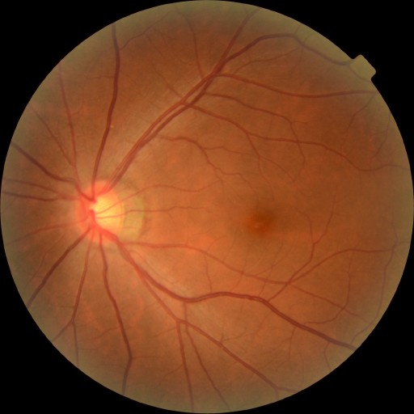
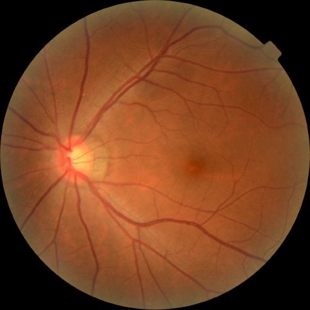
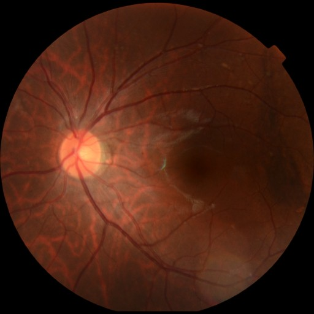
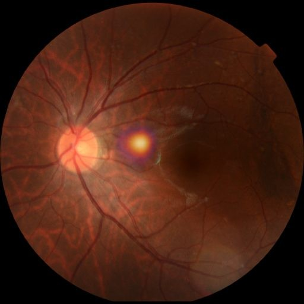
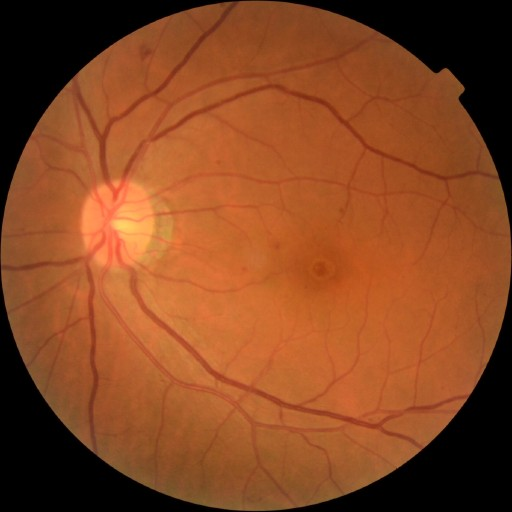
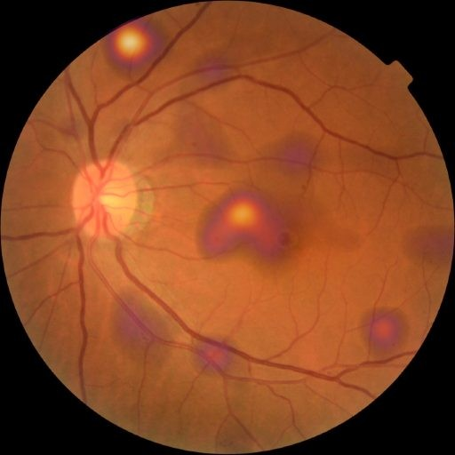
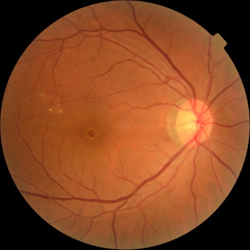
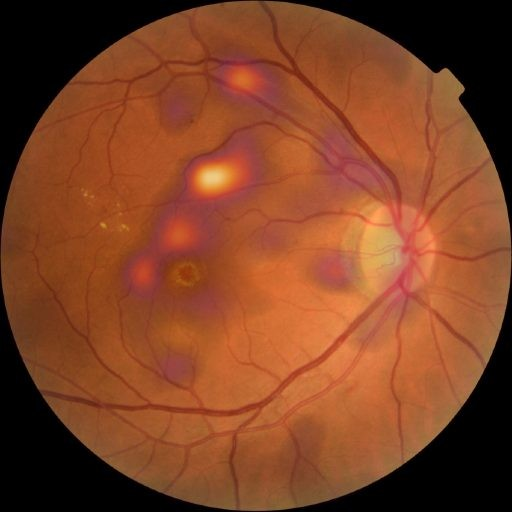
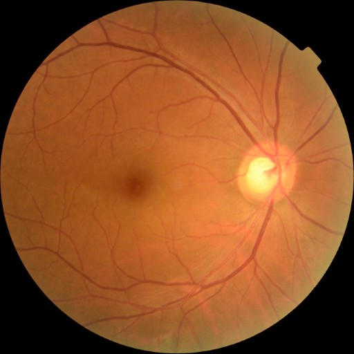
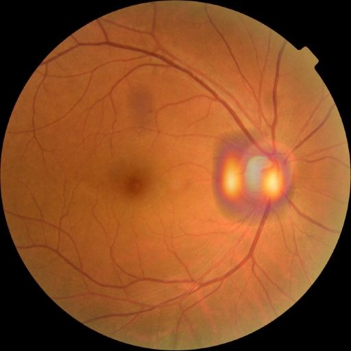
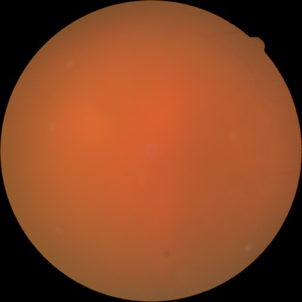
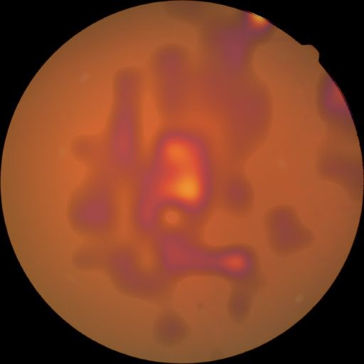
Верхний ряд: снимок. Нижний ряд: карта внимания Grad-CAM. Чем светлее пятно, тем сильнее этот участок повлиял на ответ.
Яркость карты зависит от уверенности: у здорового глаза она почти тёмная. Снимки из открытого датасета, которых модели не видели.
Светится диск зрительного нерва, главный признак, на который смотрит офтальмолог
Подсвечены кровоизлияния и экссудаты, то есть сами очаги болезни
Почти ничего не светится: подозрительных участков ИИ не находит
Пятно размыто по всему снимку: мутный хрусталик рассеивает свет
Grad-CAM: по градиентам нейросети видно, какие участки снимка повлияли на ответ. Платформа показывает эту карту врачу при каждом анализе.
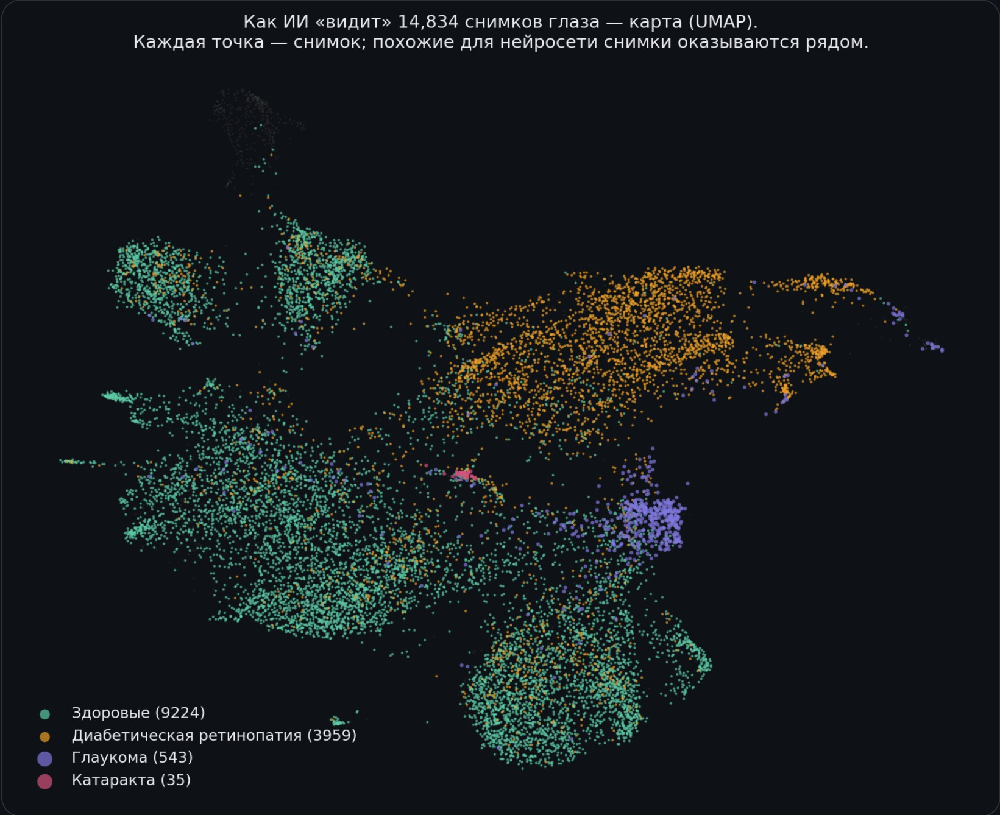
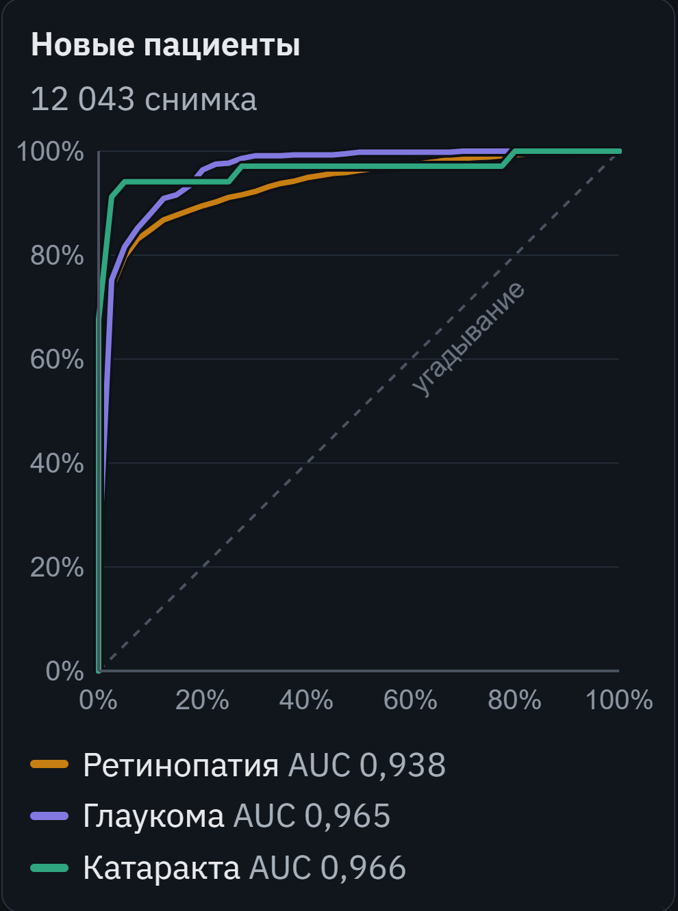
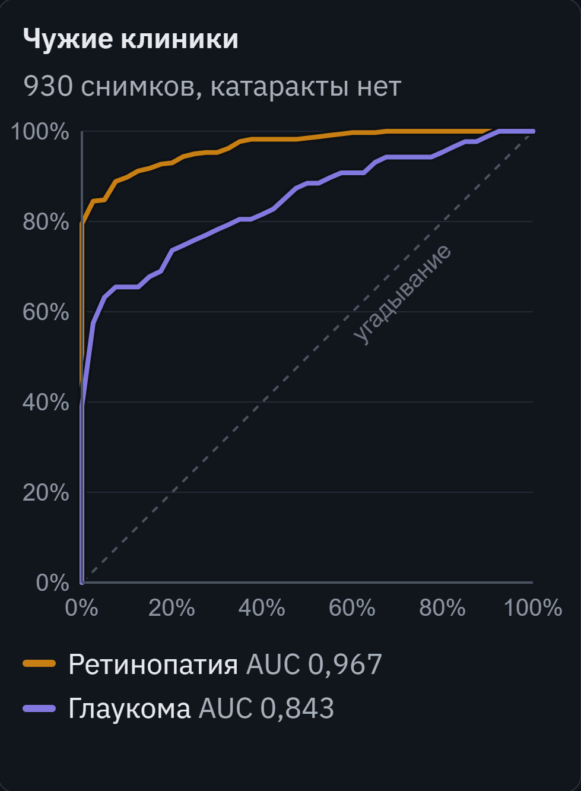
| Болезнь | AUC | Точность | Уверенные |
|---|---|---|---|
| Глаукома | 0,965 | 89,6% | 95,7% |
| Ретинопатия | 0,938 | 89,4% | 94,7% |
| Катаракта | 0,966 | 98,8% | 98,8% |
| ДР, внешний тест | 0,967 | 81,8% | 85,5% |
| Глаукома, внешний тест | 0,843 | 69,0% | 88,7% |
ROC-кривая: по вертикали доля найденных больных, по горизонтали ложные тревоги; пунктир означает угадывание. Тест: 12 043 снимка пациентов, которых не видела ни одна из трёх моделей, и 930 снимков из чужих клиник (катаракты в них нет). «Уверенные»: точность там, где ИИ уверен (78% снимков), остальные он отправляет врачу. Слабое место: глаукома на чужой камере. «Мозг» поднял AUC с 0,82 до 0,84, дорабатываем.
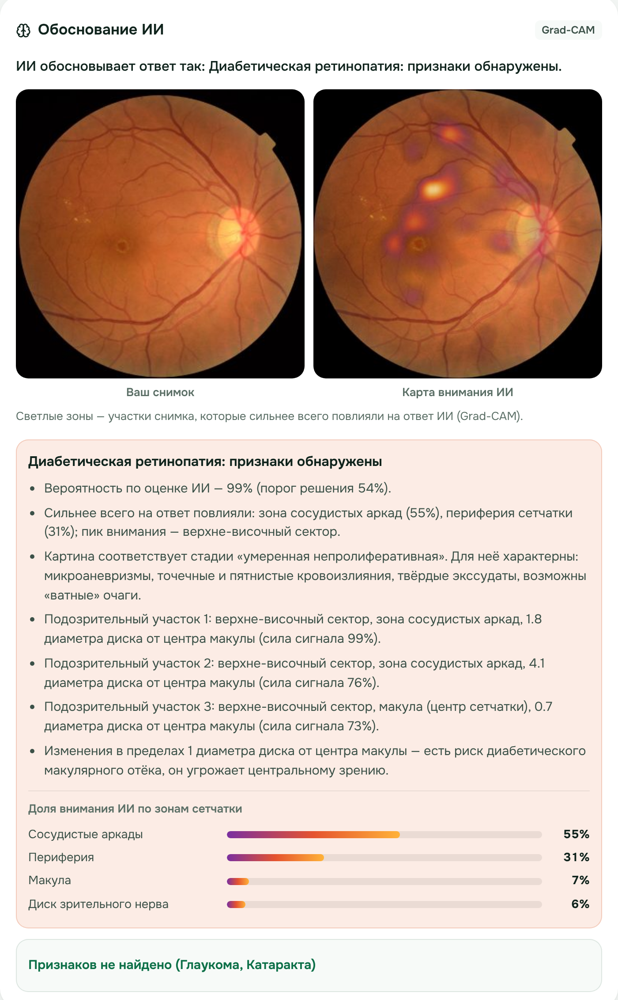
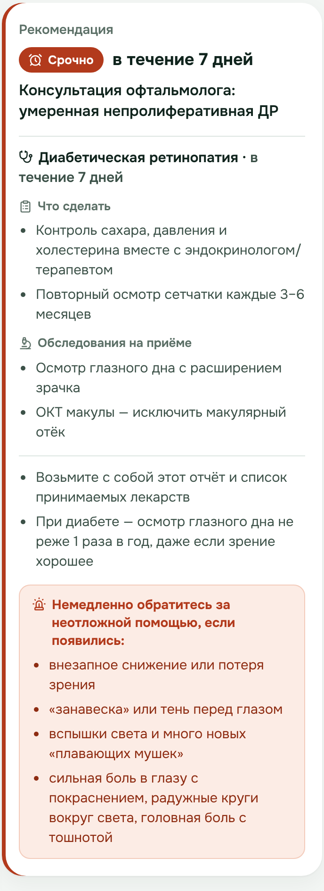
К каждой рекомендации: что сделать, какие обследования пройти и симптомы, при которых нужна неотложная помощь. На русском, казахском и английском, с PDF-отчётом.